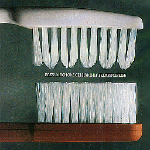
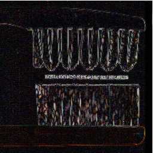
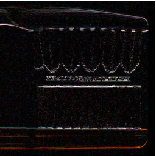
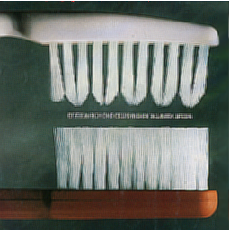
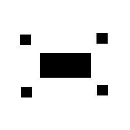
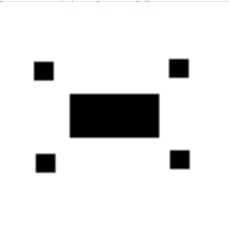
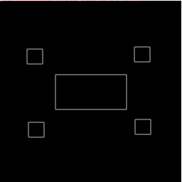
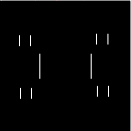

Imamges after doing convolution using the filters
1. hp.filt :- Original Image | Fitered image


2. tent.filt :- Original Image | Fitered image
3. sobol-Horz.filt :- Original Image | Fitered image

4. pulse.filt :- Original Image | Fitered image

Images after doing convolution using the filters on Squares.png
1. pulse.filt :- Original Image | Fitered image


2. hp.filt :- Original Image | Fitered image

3. Sobol-Horz.filt :- Original Image | Fitered image

Advanced Extension with Gabor Kernels/filters
1. Gabor Filter with {theta, sigma, Period} = {0 ,4,4}:- Original Image | Fitered image
2. Gabor Filter with {theta, sigma, Period} = {0 ,4,8}:- Original Image | Fitered image

3. Gabor Filter with {theta, sigma, Period} = {45,4,4}:- Original Image | Fitered image

4. Gabor Filter with {theta, sigma, Period} = {45,4,8}:- Original Image | Fitered image